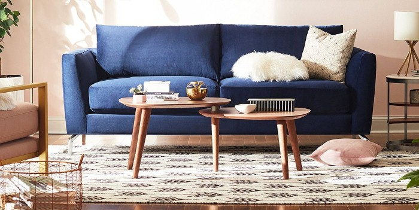
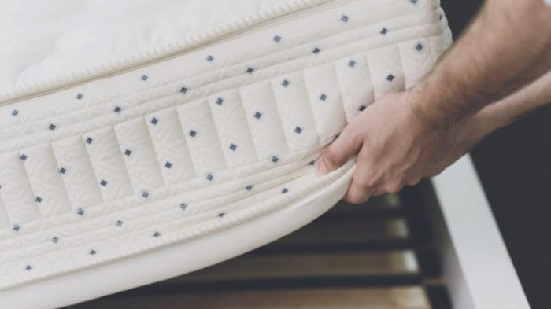
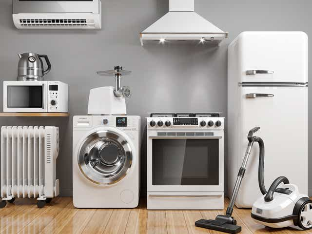
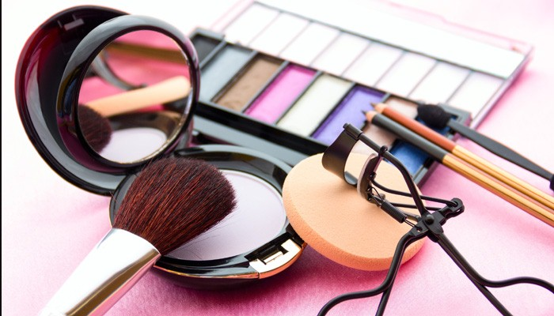

منتجات توقف عن شرائها إلكترونيًا عبر الإنترنت!
يُمكن القول أن الإنترنت هو أكبر مركز تسوق شهده العالم على الإطلاق، مع توافر منتجات أكثر مما تتخيّل متاحة للبيع، وهو سوق مفتوح على مدار الساعة.
يمكنك مقارنة الأسعار بسهولة، والبحث عن أكواد تخفيضات، وتسلّم مشترياتك من باب منزلك مباشرة، كل ذلك دون الحاجة إلى مغادرة غرفة المعيشة الخاصة بك. وبالنسبة للعديد من المنتجات، يمكنك العثور على أسعار أفضل عبر الإنترنت أيضًا.
مع ذلك، هناك بعض المنتجات التي يقول الخبراء إنها لا تستحق الشراء عبر الإنترنت، بغض النظر عن السعر. بعض هذه العناصر باهظة الثمن، مثل الأثاث والأجهزة، والتي لا تستحق المخاطرة بالشراء دون أن تتاح لك فرصة رؤيتها شخصيًا.
حتى بعض العناصر الصغيرة، مثل الطعام الطازج والمكياج، يكون من المنطقي شراؤها من المتجر. هذا يعني التخلي عن الراحة في التسوق مرتديًا ملابس النوم، ولكن الأمر يستحق أن تكون أكثر ثقة في أنك تحصل على صفقة جيدة.
هناك ثلاث مشاكل رئيسية في التسوق عبر الإنترنت. بادئ ذي بدء، لا يمكنك رؤية البضائع أو معاينتها قبل الشراء. الجانب السلبي الثاني للتسوق عبر الإنترنت هو تكاليف الشحن. بالنسبة لبعض العناصر، هذه ليست مشكلة كبيرة. لا تكلف الحزمة خفيفة الوزن الكثير لشحنها، بل إن العديد من المواقع تقدم شحنًا مجانيًا إذا كانت عملية الشراء لا تتجاوز مبلغًا معينًا من الدولارات. لكن العناصر الكبيرة، مثل الأثاث، تأتي برسوم شحن كبيرة جدًا – وإذا انتهى بك الأمر بإعادة مشترياتك، فعليك أن تدفعها مرتين.
أخيرًا، هناك بعض المنتجات التي تعتبر أرخص في الواقع للشراء في المتجر. عادةً ما تكون الأسعار عبر الإنترنت أقل لأن تشغيل موقع ويب أرخص من تشغيل متجر فعلي، ولكن في حالات قليلة، هناك عوامل خاصة – مثل القدرة على استخدام القسائم أو التفاوض مع مندوبي المبيعات – تجعل الأسعار داخل المتجر صفقة أفضل.
في هذا المقال، تعرّف على 8 منتجات من الأفضل شراؤها من المتجر وليس عبر الإنترنت..
منتجات تجنّب شراءها عبر الإنترنت..
القطع الفنية وعناصر الديكور
اليوم، أصبح شراء الأعمال الفنية الأصلية عبر الإنترنت أسهل من أي وقت مضى. تقدم الأسواق القائمة على الويب مثل Etsy جميع أنواع القطع الفنية – بالإضافة إلى عناصر الديكور ، مثل السجاد والوسائد والمصابيح – غالبًا بأسعار مغرية للغاية. ومع ذلك ، يحذر خبراء التسوق من أنه من الأفضل التخلي عن هذه الصفقات. يعتبر التسوق داخل المتجر للديكور المنزلي أكثر منطقية لعدة أسباب:
- أولًا، يُمكنك أن تُطابق اللون بسهولة أكبر بدلًا من استعمال هاتفك لمقارنة صورة على الشاشة بالصورة الأصلية ومحاولة الحصول على أقرب درجة لونية.
- ثانيًا: لا يُمكنك معاينة بعض التفاصيل المهمة عند شراء منتجات أثاث مثل جودة القماش، أو رائحة المنتجات العطرية كالشموع أو الصابون.
- ثالثًا: باستخدامك فلاتر مواقع البيع الإلكتروني، فأنت تُضيّع عليك فرصة معاينة العديد من المنتجات الأخرى بسبب اختلاف في اللون أو الحجم أو النمط. في حين تمنحك المتاجر الفعلية فرصة معاينة أكبر عدد ممكن من المنتجات.
- أخيرًا: إن لم يُعجبك المنتج بعد شرائه، بإمكانك إرجاعه إلى مصدر الشحن، لكنك بهذه الحالة ستتكفل بمصاريف الشحن التي يُمكن أن تكون باهظة.
الأثاث المنزلي
شراء الأثاث عبر الإنترنت له نفس المشاكل مثل شراء القطع الفنية والإكسسوارات. من الصعب الحكم على لون الأريكة وجودتها على الشاشة، والأهم من ذلك هو الحصول عليها بشكل صحيح مقارنةً بسعرها الضخم.
المراتب والفراش
جودة مرتبتك تُحدث فرقًا كبيرًا في كيفية نومك جيدًا. مع ذلك، هذا لا يعني أن مجرد شراء مرتبة باهظة الثمن يضمن راحة أفضل أثناء الليل. الراحة في المرتبة شيء شخصي للغاية؛ يعتمد ذلك على مجموعة متنوعة من العوامل، مثل طولك ووزنك، وما إذا كنت تنام على جانبك أو ظهرك، ومقدار حركتك ليلاً، وما إلى ذلك.
هذا هو السبب في ضرورة اختبار الأثاث من أجل الراحة بشكل خاص عندما يتعلق الأمر بالمراتب. يمكن أن تمنحك قراءة المراجعات عبر الإنترنت فكرة عامة عن شكل المرتبة، مما يساعدك في تحديد الطرازات التي تريد إلقاء نظرة عليها. مع ذلك، لتعرف إن كانت تُناسبك، عليك أن تستلقي عليها بنفسك وتُجربها قبل الشراء.
الأجهزة الكبيرة
يمكن أن تكون صفقات الأجهزة عبر الإنترنت مغرية بالتأكيد. عند تصفح الويب، يمكنك العثور على عروض للأجهزة بأسعار مخفضة بشكل كبير، وأحيانًا يتم تسليمها مجانًا. مع ذلك، يمكنك في كثيرٍ من الأحيان الحصول على نفس الخصومات وعروض التوصيل للتسوق داخل المتجر، لذلك لا توجد ميزة كبيرة للشراء عبر الإنترنت.
السيارات
يمكن أن يكون شراء سيارة عملية مرهقة للغاية. منذ اللحظة التي تمشي فيها في باب الوكالة، يلتصق مندوب المبيعات بك مثل الغراء، ويفعل كل ما في وسعه لإغرائك بتوقيع عقد في ذلك الوقت. من المغري أن تقوم فقط بالتسوق عبر الإنترنت لشراء سيارتك وتجنب كل هذا المتاعب.
مع ذلك، شراء سيارة دون رؤيتها شخصيًا هو خطأ كبير. يعد استخدام الويب للبحث عن طرازات وأسعار سيارات مختلفة أمرًا منطقيًا، ولكن قبل أن تستقر فعليًا على سيارة، تحتاج إلى الجلوس خلف عجلة القيادة لاختبار القيادة. إنها الطريقة الوحيدة للتأكد من مدى الراحة التي تشعر بها بالسيارة، ومدى جودتها، ومدى جودة الرؤية – حتى التفاصيل الصغيرة مثل ما إذا كان بإمكانك الوصول إلى أدوات التحكم في الراديو دون إبعاد عينيك عن الطريق.
الأدوات الموسيقية

آلة موسيقية راقية، مثل غيتار تايلور، تكلف مئات إن لم يكن الآلاف من الدولارات. قبل القيام باستثمار من هذا القبيل، عليك أن تعرف كيف تبدو الآلة الموسيقية وكيف تشعر بها بين يديك – والطريقة الوحيدة لاختبار ذلك هو بالعزف عليها بنفسك. لا يكفي الاعتماد على اسم العلامة التجارية، حيث يمكن أن تختلف النغمة وإمكانية اللعب على نطاق واسع حتى داخل العلامات التجارية الموثوقة.
منتجات البقالة
من المنطقي التسوق عبر الإنترنت لشراء أدوات النظافة وأدوات تخزين الطعام، مثل المناشف الورقية. يمكن أن يوفر لك توصيلها خصمات كبيرة، بدون تضييع وقت في التجول بين الرفوف. مع ذلك، عندما يتعلق الأمر بالمواد الغذائية الفعلية، من الأفضل التوجه إلى متجر البقالة شخصيًا لمعاينة جودة المنتجات والنظر في أفضل سعر بينها، واستكشاف منتجات جديدة ربما لا تعرفها.
مستحضرات التجميل
إن كان هناك ما يعادل جائزة أوسكار لأكثرالمكياج ومستحضرات التجميل منتجات من الأفضل معاينتها شخصيًا عن قرب قبل شرائها، للتأكد من درجة الألوان واختبار عينات مجانية منها لرؤية ما يُناسبك وما لا يُناسب بشرتك.
هناك شيء آخر يقول الخبراء إنه لا يجب عليك أبدًا شرائه عبر الإنترنت: أي شيء تم وضع علامة عليه على أنه “بيع نهائي” عادةً لا يتم إرجاع هذه العناصر المغلقة، لذلك إذا لم تعجبك عملية الشراء، فلن يحالفك الحظ. ما لم تكن التكلفة ضئيلة تمامًا، فمن الأفضل الابتعاد عن هذه العناصر عندما تكون على الويب – حتى بالنسبة للمنتجات التي من الأفضل عادةً شراؤها عبر الإنترنت.
المصدر
لن يتم نشر عنوان بريدك الإلكتروني